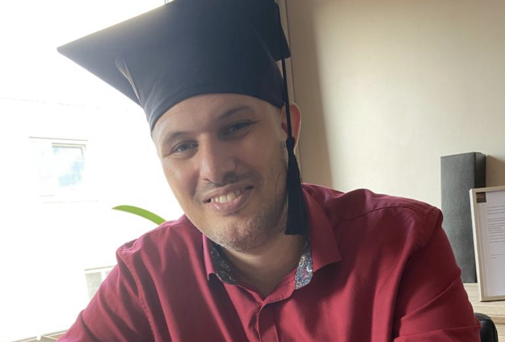

Mijn naam is Patrick Pierpont.
Ik ben geboren in Nederland, Den Haag.
Ik ben Geboren op 21 juli 1980.
Ik woonde tot mijn 28 jaar in Nederland, en heb daarna 10 jaar in Suriname gewoond.
Na die 10 jaar zijn we verhuist naar Belgie, en ik woon nog steeds hier.
Ik ben 10 jaar getrouwd, en heb 1 dochter.
Mijn hobby's zijn, basketbal, voetbal, en computers.
